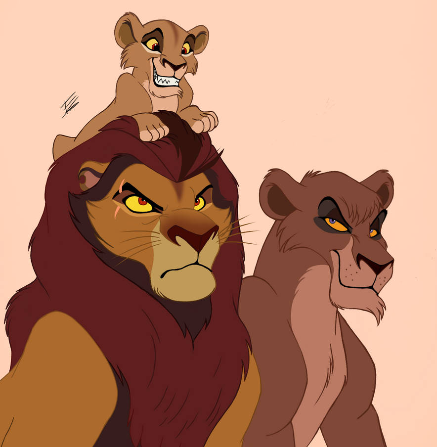
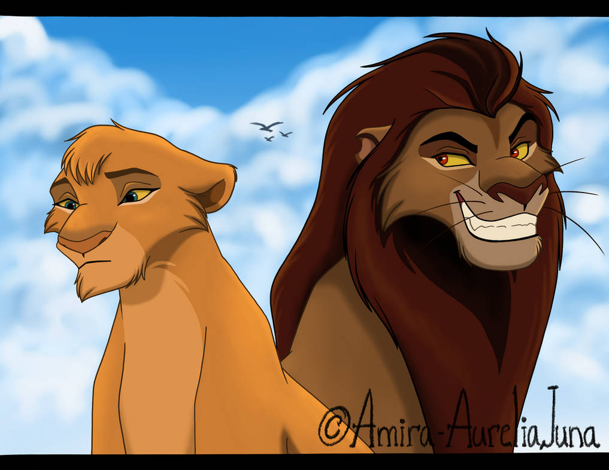

Scar and Zira's story
They were the fourth King and Queen of the Pridelands.They ruled over the Pridelands with hatred and anger.Scar who is known as Taka,killed Mufasa so that he could attain the king position.He killed Mufasa because of jelousy.His name meant waste.And on the period of being a king,Scar and Zira had three cubs namely;Kovu,Nuka and Vitani.They also took Sarabi,Nala,Sarafina and the other lionesses prisoned them and we all think that Vitani is Zira's daughter but she is honestly Zira's daughter.Nala went hunting each day to feed Vitani thinking that she is Zira's daughter but the story is that when they were in a place called Hakuna Matata,she gave birth to Vitani as her first child with Simba and she appropriately forgot to carry Vitani along with her to the Pridelands
.webp)
.webp)
Zira's family
Zira who was Scar's wife,was the daughter to Sahasi and Kula.She was the only daughter of Sahasi and Kula.She was the wierdest queen of all.She wanted to kill Simba so that his son,Kovu wou;d attain the throne.When in a battle with the lions of the Pridelands,Kovu's mother died while trying to kill Simba for his son to attain the throne.Kiara offered her a hand to help her get up but becuase of her hatred to Simba's pride she did not accept it and the ranging river swept her along with her hatred and her pride joined sides with Simba and they lived peacefully ever after.
 